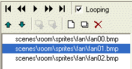
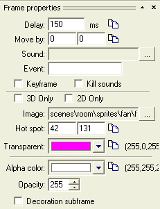
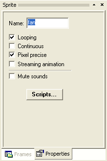

Hint
Sprites are the basic graphics elements used by WME. A "sprite" can be either a normal static image or an animation. While a normal image can be created by any graphics editor program, the animated sprites are more complicated to create. Basically, the animated sprite is a set of one or more images. Those images change in specified interval thus forming an animation.
WME Development Kit includes a tool for creating animated sprites; this tool is called SpriteEdit. The SpriteEdit tool allows you to assemble a bunch of single images (animation frames) into one animation and setting several additional properties. You can also assign sounds to individual frames of the animation.
One animation frame is not limited to a single image. You can compose one frame of multiple images (they are then called the "subframes"). You don't usually need to use subframes, but they can be useful sometimes. For example let's assume you have an animation of a walking man. Now you want the man to wear a hat. Instead of redrawing all the animation frames, you can draw just the hat and add it as a subframe to all the animation frames. Of course this is not a good example, but you may find a more creative use for the subframes.
The easiest way of creating a new sprite is to use the template facility of the ProjectMan (read more), but you can as well build a new sprite from scratch by creating a new file in SpriteEdit.
SpriteEdit can be invoked either by double-clicking a sprite file in ProjectMan or by clicking the SpriteEdit icon in the WME Development Kit program group in the Windows Start menu.
The user interface of the SpriteEdit tool is very straightforward. The "sprite bar" on the left side displays information about your animation and allows you to change its properties.

This toolbar allows you to change position within a sprite, or test your animation (the "Play" button). You can reorder the animation frames or subframes using the green arrows. The Looping check-box specifies whether the animation loops, i.e. after displaying the last frame the animation won't stop, but rather skip back to the beginning.
The last set of buttons allows you to add frames and subframes or remove them respectively.
|
|
You can select multiple files in the "Add frame(s)" file selection dialog. |
Below the toolbar you can see a list of all frames your animation consists of.
The "Frame properties" toolbar allows you to change settings for each animation frame (or subframe).

|
|
Some properties can by copied to all frames at once by pressing the "Apply to all frames" buttons. |
By selecting the "Properties" tab on the sprite bar, you can change properties of the entire animation.

Another feature of SpriteEdit you may find useful is the ability to set a background image for the animation. This is a design-only setting and it can be used for example for tweaking an animation to correctly fit a certain game background. You can set the background image by opening the "View" menu and then selecting the "Background image..." command. A dialog window will appear allowing you to specify an image file, an offset of the image (so that you can position your sprite within the image) and a transparency for easier designing.